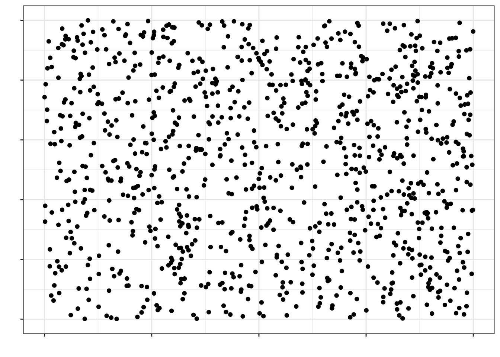
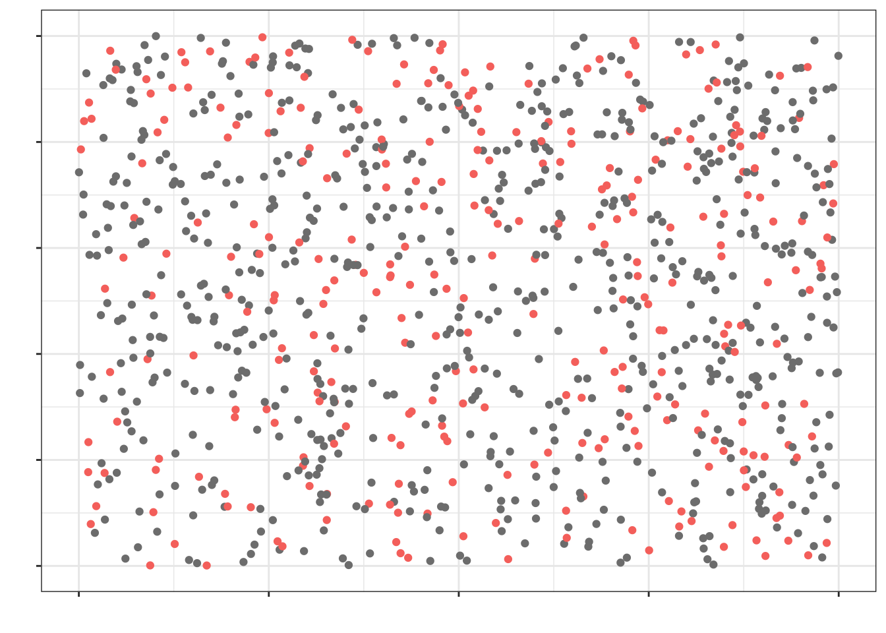
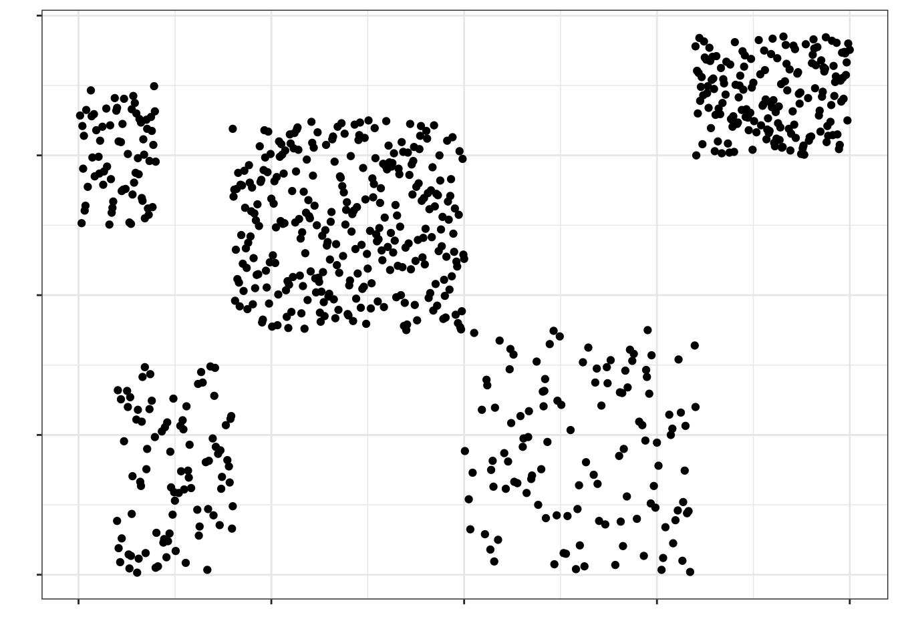
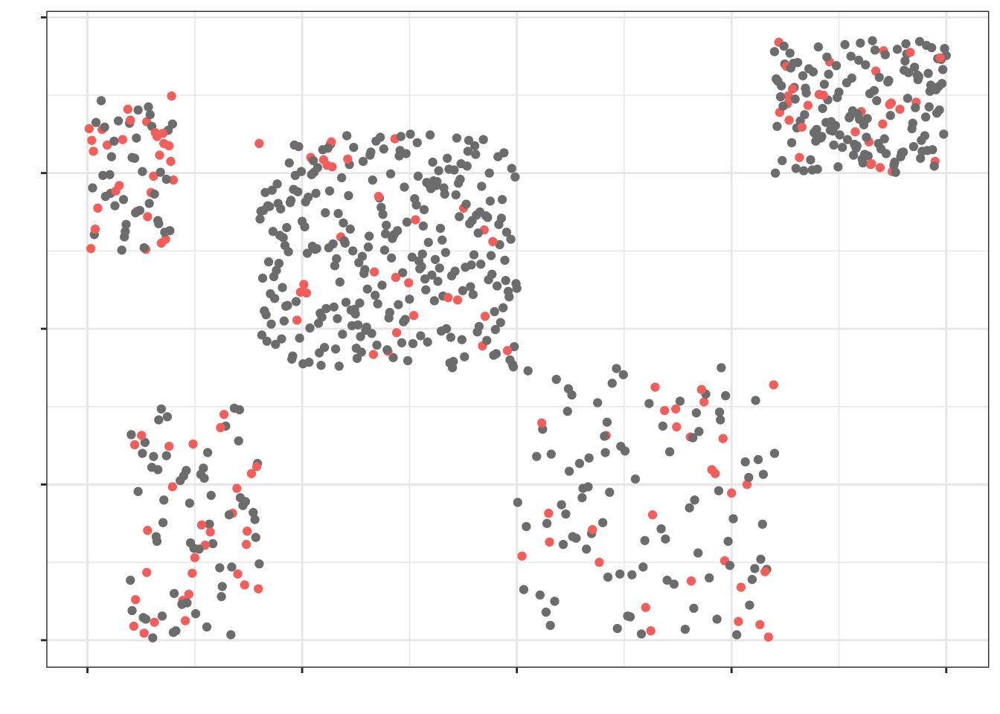
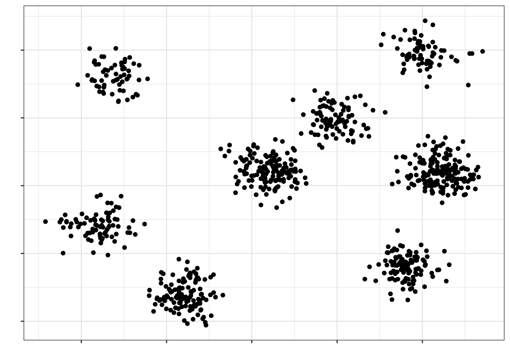
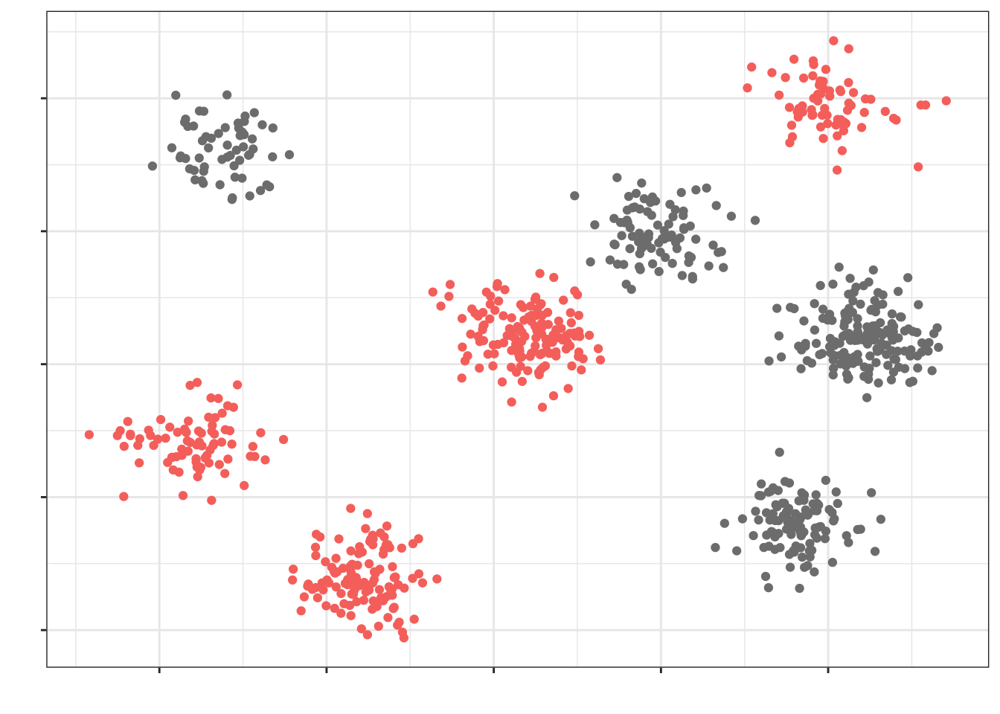
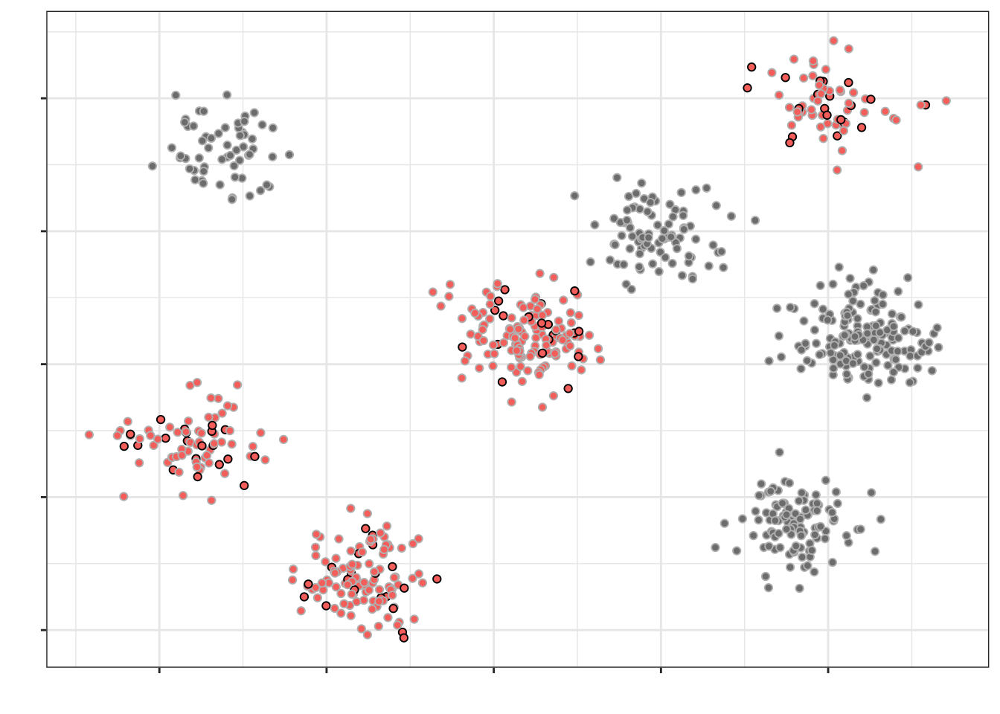

1 Введение в статистику
1.1 Исходные понятия статистики
Статистика — это междисциплинарная область знаний, а также практической деятельности, изучающая массовые явления, а также прицнипи и методы работы с данными, характеризующими эти явления.
Звучит красиво. Осталось понять, что это значит.
Массовые явления затрагивают огромные массы людей. Огромность масс, конечно, различна. Скажем, базовые перцептивные закономерности, связанные с тем, как устроена зрительная система, охватывают всех людей. Уровень удовлетворенности жизнью россиян охватывает только население России. Городские блага москвичей — только для жителей Москвы. Учебная мотивация студентов департамента психологии НИУ ВШЭ — это только про людей с психологических бакалариата и магистратур НИУ ВШЭ.
Генеральная совокупность — множество всех [существующих] исследуемых объектов, а также сведения о них.
Объем совокупности (\(N\)) — число единиц, образующих совокупность.
Короче, надо исследовать много людей, а времени и денег нет. Приходится из генеральной совокупности извлекать выборку — некоторую часть нашей генеральной совокупности (объемом \(n\)). При этом \(n \ll N\) (много меньше).
Нас, конечно же, интересуют какие-то признаки, которыми обладают объект нашей генеральной совокупности. Эти признаки могут быть выражены количественно в определенных показателях.
Например,
| Признак | Показатель |
|---|---|
| Рабочая память | Объем рабочей памяти |
| Нейротизм | Уровень нейротизма по BFI |
| Заработная плата | Средняя заработная плата |
| Когнитивная нагрузка | Уровень когнитивной нагрузки по ЭЭГ-коррелятам |
| Доверие к ИИ | Уровень доверия к ИИ по опроснику TAIA |
| Индивидуализм/коллективизм | Индекс индивидуализма/коллективизма по модели Хофстеде |
Признаки могут быть очень разными, как и показатели, которыми мы их пытаемся измерить. Не будем сильно в это углубляться, ибо этим занимается теория измерений, а мы тут статистикой пришли заниматься.
Что нам важно сейчас: генеральная совокупность характеризуется параметром.
Параметр — относительно постоянная [от одной совокупности к другой] величина, характеризующая генеральную совокупность по некоторому показателю.
Ну, то есть в принципе существует средний уровень нейротизма по BFI студента-психолога или индекс индивидуализма/коллетивизма для конкретной культуры. Проблема в том, что величина параметра, который мы изучаем, неизвестна. И никогда не будет известна.
Но почему?
- Мы не можем изучать всю генеральную совокупность — слишком много объектов
- Наши измерения всегда содержат ошибку — мы даже длину линейкой точно не можем измерить, что уж о психологических измерениях говорить
Поэтому величину параметра мы можем только предсказать с определённой статистической точностью. Измеряя что-либо на выборке, мы получаем выборочная характеристика (оценку) — эмпирический (измеримый) аналог параметра.
1.2 Зачем нужна статистика?
Мы в какой-то малоприятной ситуации… Мы пытаемся измерить то, что в определенном смысле невозможно измерить, при этом достаточно точно, чтобы потом это можно было сравнивать или строить какие-то модели. Задача выглядит заведомо провальной…
Однако именно в этот момент на помощь нам приходит статистика. Не в гордом одиночестве, конечно. Она проводит с собой теорию измерений, психометрику, теорию обнаружения сигнала и др. Всё это работает в нашей психологической науке в комлексе. Мы же в данном курсе сосредотачиваемся на статистической части этого салата.
Статистика даёт на теоретический и математический инструментарий, чтобы мы могли делать какие-либо выводы по нашим собранным данным. К сожалению, как бы нам не хотелось, мы не можем делать выводы по сырым данным, потому что измерения по выборке не отражают вот прям ровно то, что есть в генеральной совокупности. Нам их надо определенным образом обсчитать, чтобы наши выводы были корректными. Этим и занимается статистика.
Возможно, это звучит достаточно абстрактно, но я хочу, чтобы на данном моменте вы поймали некоторое интуитивное понимание того, зачем нужна статистика. Далее это обрастёт содержанием и уложится, я надеюсь, в достаточно стройную систему.
Итог, статистика помогает нам делать выводы о нашей генеральной совокупности по выборке.
1.3 Выборка должна быть репрезентативна
Статистика даёт нам теоретический и математический аппарат, который позволяет делать выводы о генеральной совокупности по выборке. Однако если мы криво собрали данные, то никакая математика нас не спасет от некорректных выводов.
Garbage in, garbage out.
Репрезентативность — степень соответствия характеристик выборки характеристикам генеральной совокупности.
Например, мы хотим исследовать связь учебной мотивации и академической успеваемости бакалавров психологии. Если мы соберем данные только со своих однокурсников, будет нехорошо, так как в нашу выборку не попали (1) другие курсы психологического бакалавриата нашего вуза, (2) бакалавры-психологи других вузов Москвы и (3) бакалавры-психологи вузов других городов России.
И так работает всегда.
Ну, почти. Есть соблазн проводить исследования на студентах-психологах, потому что их они достаточно близко и их можно загнать на эксприменты за баллы. Более-менее сносно это может работать на каких-то базовых когнитивных феноменах из восприятия и памяти. Обычно у нас нет оснований предполагать, что восприятие и память работают по-разному у людей разного возраста и разных социальных страт. Но вот уже с мышлением возникают проблемы.
Почему выборка должна быть репрезентативной?
Потому что если мы делаем нормально, то хотим обобщать результаты нашего исследования, полученные на выборке, на генеральную совокупность. Если выборка нерепрезентативна, то мы не можем этого сделать. Зачем в таком случае проводить исследование — решительно неясно.
1.3.1 Как набрать репрезентативную выборку
- Осознать, кто наша генеральная совокупность. В самом начале этой страницы приводились примеры разных генеральных совокупностей, и для каждой генеральной совокупности репрезентативная выборка будет своя.
- Понять, есть ли какая-то группировка, важная для нашего исследования, в нашей генеральной совокупности — социальная страта, специальность образования, сфера работы, пол / гендер, возрастные группы, регион проживания, семейное положение, что-либо ещё.
- Рассчитать достаточный объём выборки.
- это не самая простая задача и о ней мы будем говорить отдельно
- пока отметим в назывном порядке, что на объем выборки будут влиять дизайн исследования, изменчивость признака, уровень значимости и размер эффекта [что бы это ни значило]
- Обеспечить случайное попадание респондентов в выборку.
Здесь надо остановиться подробнее. Если у нас есть ресурсы набрать много человеков в выборку (скажем, раза в 2–3 больше, чем достаточный объем выборки), то можно просто случайным образом откуда-то доставать людей — и всё будет хорошо. Закон больших чисел и центральная предельная теорема говорят, что наша выборка будет репрезентативной. Пока примем это как данность, позже поговорим об это подробнее.
Для интересующихся
Закон больших чисел
С увеличением числа случайных величин их среднее арифметическое стремится к среднему арифметическому математических ожиданий и перестает быть случайным. Общий смысл закона больших чисел — совместное действие большого числа случайных факторов приводит к результату, почти не зависящему от случая.
Таким образом, закон больших чисел гарантирует устойчивость для средних значений некоторых случайных событий при достаточно длинной серии экспериментов.
Центральная предельная теорема
Распределение случайной величины, которая получена в результате сложения большого числа независимых случайных величин (ни одно из которых не доминирует, не вносит в сумму определяющего вклада и имеет дисперсию значительно меньше по сравнению с дисперсией суммы) имеет распределение, близкое к нормальному.
Из ЦПТ следует, что ошибки выборки также подчиняются нормальному распределению.Если мы всё же не можем набрать много человеков, то надо набрать выборку достаточного объема и проверить репрезентативна ли она — отражает ли выборка те группировки объектов, которые есть в генеральной совокупности.
Идеальная выборка — это когда каждый человек имеет равную вероятность попасть в число респонтентов / испытуемых. Полностью случайный отбор трудно достижим — это очень дорого — но к нему нужно стремиться. Сам метод сбора данных может деформировать выборку (например, онлайн опросы отсекают пенсионеров), поэтому думать о сборе данных необходимо уже на этапе планирования исследования.
1.3.2 Способы формирования репрезентативной выборки
1.3.2.1 Простая случайная выборка (simple random sample)
- Элементы генеральной совокупности случайным образом попадают в выборку
- С увеличением объема простая случайная выборка будет все больше напоминать генеральную совокупность по своим характеристикам.
Представим, что на этой картинке изображена вся генеральная совокупность:

Если мы наберем простую случайную выборку из этой генеральной совокупности, она будет выглядеть так (красные точки):

Как можно заметить, в выборку попали объекты из всех частей нашей генеральной совокупности — говорит о том, что выборка репрезентативна.
1.3.2.2 Стратифицированная выборка (stratified sample)
- Генеральная совокупность разбивается на несколько обособленных различных по своей природе групп (страт).
- Например, по полу или группе крови
- Из каждой группы случайным образом выбираются несколько объектов, которые попадают в выборку.
Пусть мы разбили нашу генеральную совокупность на пять страт:

Стратифицированная выборка (здесь: по 30 объектов из страты) будет выглядеть так:

1.3.2.3 Групповая выборка (cluster sample)
- Генеральная совокупность разбивается на несколько обособленных, но одинаковых групп (кластеров).
- Например, население города группируется по району проживания
- Выбираются случайным образом несколько групп
- Из каждой группы случайным образом выбираются несколько объектов, которые попадают в выборку.
Пусть мы разделили нашу генеральную совокупность на 8 кластеров:

Кластеры у нас примерно одинаковые по характеристикам между собой — по крайне мере, мы так предполагаем. Выберем случайно четыре кластера, которые примут участие в исследовании:

Теперь из этих кластеров наберем выборку (допустим, по 20 наблюдений из кластера) случайным образом (объекты, попавшие в итоговую выборку отмечены черным контуром, не попавшие — серым):

Такой подход к формированию выборки позволяет экономить драгоценные ресурсы при проведении исследования.
Пока что остановимся на этом — для начала достаточно. Мы еще не раз будем возвращаться к этим вопросам и на других курсах вы тоже будете говорить о репрезентативности выборки.